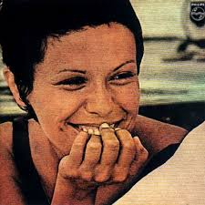
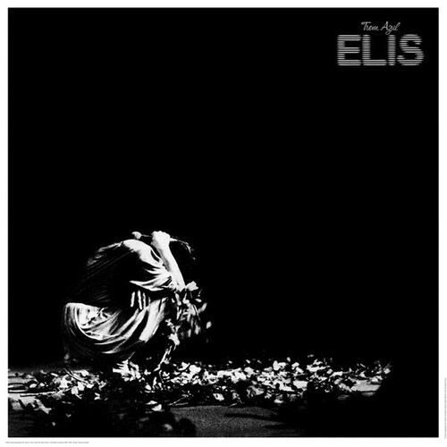

Elis Regina
3,4M seguidores
Músicas Populares
- Alô Alô Marciano
- Águas de Março
- Como Nossos Pais
- Madalena
- O Bêbado e a Equilibrista
Álbuns

Em Pleno Verão

Trem Azul
Falso Brilhante
Playlists
- Coleção MPB
- This is Elis Regina
- O Melhor do MPB
Sobre Elis Regina
Elis Regina Carvalho Costa (Porto Alegre, 17 de março de 1945 — São Paulo, 19 de janeiro de 1982) foi uma cantora brasileira. Conhecida pela competência vocal, musicalidade e presença de palco, foi aclamada tanto no Brasil quanto internacionalmente, e comparada a cantoras como Ella Fitzgerald, Sarah Vaughan e Billie Holiday. Com os sucessos de Falso Brilhante (1975-1977) e Transversal do Tempo (1978), Elis Regina inovou os espetáculos musicais no país.